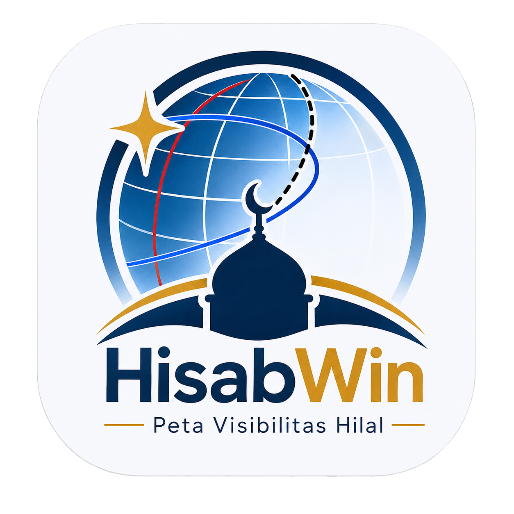

HisabWin
Peta Visibilitas Hilal — Kriteria MABIMS & Muhammadiyah
Mode Komputasi:
Presisi Tinggi (NASA JPL DE421)
Mode Ringan (VSOP87 / Analitis Fast)
nights_stay
Visibilitas Hilal & Peta
mosque
Waktu Sholat & Kiblat
brightness_3
Gerhana
1
Cari Ijtimak
Tahun Masehi
Cari Ijtimak
2
Tampilkan Peta
Tanggal yang dihitung
Hari Ijtimak
Sehari Setelah Ijtimak
Hitung & Tampilkan Peta
check
Hasil
Kriteria MABIMS
Kriteria Muhammadiyah
Tinggi Hilal (Indonesia)
Elongasi (Indonesia)
Peta Visibilitas Hilal — Kriteria MABIMS
center_focus_strong
Reset View
fullscreen
Layar Penuh
mosque
Waktu Sholat & Kiblat — HisabWin
Preset Kota
-- Koordinat Kustom --
Jakarta (-6.1751, 106.8272, UTC+7)
Surabaya (-7.2575, 112.7521, UTC+7)
Bandung (-6.9175, 107.6191, UTC+7)
Medan (3.5952, 98.6722, UTC+7)
Semarang (-6.9667, 110.4167, UTC+7)
Yogyakarta (-7.7956, 110.3695, UTC+7)
Makassar (-5.1477, 119.4327, UTC+8)
Palembang (-2.9761, 104.7754, UTC+7)
Denpasar / Bali (-8.6705, 115.2126, UTC+8)
Banda Aceh (5.5483, 95.3238, UTC+7)
Jayapura (-2.5489, 140.7196, UTC+9)
Makkah (21.4225, 39.8262, UTC+3)
Madinah (24.4672, 39.6112, UTC+3)
my_location
Lokasi Saya
Lintang (Lat °)
Bujur (Lon °)
Zona Waktu (Jam UTC)
Tanggal
Kriteria / Standard Sudut
Kemenag RI (Subuh -20°, Isya -18°)
Muhammadiyah (Subuh -18°, Isya -18°)
MWL — Muslim World League (Subuh -18°, Isya -17°)
Egyptian General Authority (Subuh -19.5°, Isya -17.5°)
Mazhab Ashar
Syafi'i / Maliki / Hanbali (Faktor 1)
Hanafi (Faktor 2)
Elevasi (mdpl)
Ihtiyat (menit)
mosque
Hitung Waktu Sholat Hari Ini & Kiblat
calendar_month
Jadwal 1 Bulan Penuh
check
Hasil Waktu Sholat Hari Ini
explore
Arah Kiblat & Rashdul Kiblat
U
T
S
B
295° NW
calendar_month
Jadwal Sholat 1 Bulan Penuh
download
Unduh CSV
Tgl
Hari
Imsak
Subuh
Terbit
Dhuha
Dzuhur
Ashar
Maghrib
Isya
Kiblat
1
Cari Gerhana
Tahun
Cari Gerhana
☀️ Gerhana Matahari
🌕 Gerhana Bulan
check
Detail Gerhana
Peta Gerhana
🗺️ Datar
🌐 Globe
center_focus_strong
Reset View
fullscreen
Layar Penuh